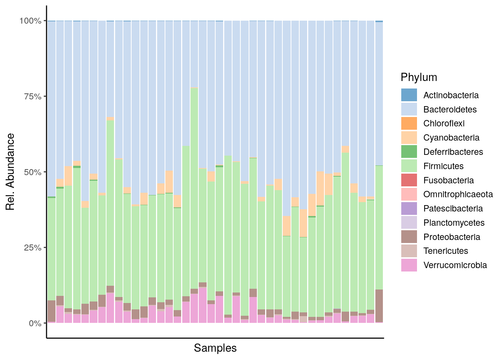
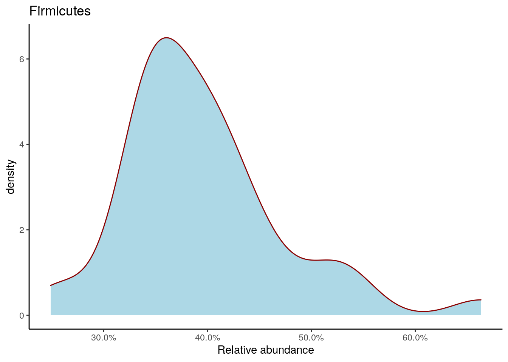

Chapter 5 Microbiome data exploration
Now we have loaded the data set into R. Next, let us walk through some basic operations for data exploration to confirm that the data has all the necessary components.
5.1 Data structure
Let us now investigate how taxonomic profiling data is organized in R.
Dimensionality tells us how many taxa and samples the data contains. As we can see, there are 12613 taxa and 40 samples.
# mae[[1]]: indexing/retrieving the taxonomic data experiment
dim(mae[[1]])## [1] 12613 40The rowData slot contains a taxonomic table. This includes taxonomic
information for each of the 12613 entries. With the head()
command, we can print just the beginning of the table.
The rowData seems to contain information from 7
different taxonomy classes.
knitr::kable(head(rowData(mae[[1]]))) %>%
kableExtra::kable_styling("striped",
latex_options="scale_down") %>%
kableExtra::scroll_box(width = "100%")| Phylum | Class | Order | Family | Genus | Species | OTU | |
|---|---|---|---|---|---|---|---|
| GAYR01026362.62.2014 | Proteobacteria | Alphaproteobacteria | Rickettsiales | Mitochondria | Solanum melongena (eggplant) | Solanum melongena (eggplant) | GAYR01026362.62.2014 |
| CVJT01000011.50.2173 | Firmicutes | Bacilli | Bacillales | Staphylococcaceae | Staphylococcus | Staphylococcus aureus | CVJT01000011.50.2173 |
| KF625183.1.1786 | Proteobacteria | Gammaproteobacteria | Enterobacteriales | Enterobacteriaceae | Klebsiella | Klebsiella oxytoca | KF625183.1.1786 |
| AYSG01000002.292.2076 | Firmicutes | Bacilli | Lactobacillales | Streptococcaceae | Streptococcus | Streptococcus thermophilus TH1435 | AYSG01000002.292.2076 |
| CCPS01000022.154.1916 | Proteobacteria | Gammaproteobacteria | Enterobacteriales | Enterobacteriaceae | Escherichia-Shigella | Escherichia coli | CCPS01000022.154.1916 |
| KJ923794.1.1762 | Firmicutes | Bacilli | Bacillales | Staphylococcaceae | Staphylococcus | Staphylococcus aureus | KJ923794.1.1762 |
The colData slot contains sample metadata. It contains information for all 40 samples.
However, here only the 6 first samples are shown as we use the head() command. There
are 6 columns, that contain information, e.g., about patients’ status, and cohort.
# For simplicity, classify all high-fat diets as high-fat, and all the low-fat
# diets as low-fat diets
colData(mae)$Diet <- ifelse(colData(mae)$Diet == "High-fat" |
colData(mae)$Diet == "High-fat + XOS",
"High-fat", "Low-fat")
knitr::kable(head(colData(mae))) %>%
kableExtra::kable_styling("striped",
latex_options="scale_down") %>%
kableExtra::scroll_box(width = "100%")| Sample | Rat | Site | Diet | Fat | XOS | |
|---|---|---|---|---|---|---|
| C1 | C1 | 1 | Cecum | High-fat | High | 0 |
| C2 | C2 | 2 | Cecum | High-fat | High | 0 |
| C3 | C3 | 3 | Cecum | High-fat | High | 0 |
| C4 | C4 | 4 | Cecum | High-fat | High | 0 |
| C5 | C5 | 5 | Cecum | High-fat | High | 0 |
| C6 | C6 | 6 | Cecum | High-fat | High | 0 |
From here, we can draw summaries of the sample (column) data, for instance to see what is the diet distribution.
The command colData(mae)$Diet fetches the data from the
column, and table() creates a table that shows how many times each
class is present, and sort() sorts the table to ascending order.
There are 20 samples from mice having High-fat, and 20 Low-fat.
sort(table(colData(mae)$Diet))##
## High-fat Low-fat
## 20 205.1.1 Transformations
Microbial abundances are typically ‘compositional’ (relative) in the current microbiome profiling data sets. This is due to technical aspects of the data generation process (see e.g. Gloor et al., 2017).
The next example calculates relative abundances as these are usually easier to interpret than plain counts. For some statistical models we need to transform the data into other formats as explained in above link (and as we will see later).
# Calculates relative abundances, and stores the table to assays
mae[[1]] <- transformCounts(mae[[1]], method = "relabundance")A variety of standard transformations for microbiome data are available through mia R package.
5.1.2 Aggregation
Microbial species can be called at multiple taxonomic resolutions. We can easily agglomerate the data based on taxonomic ranks. Here, we agglomerate the data at Phylum level.
se_phylum <- agglomerateByRank(mae[[1]], rank = "Phylum")
# Show dimensionality
dim(se_phylum)## [1] 13 40Now there are 13 taxa and 40
samples, meaning that there are 13 different
Phylum level taxonomic groups. Looking at the rowData after
agglomeration shows all Firmicutes are combined together, and all
lower rank information is lost.
From the assay we can see that all abundances of taxa that belong to Firmicutes are summed up.
knitr::kable(head(rowData(se_phylum))) %>%
kableExtra::kable_styling("striped",
latex_options="scale_down") %>%
kableExtra::scroll_box(width = "100%")| Phylum | Class | Order | Family | Genus | Species | OTU | |
|---|---|---|---|---|---|---|---|
| Proteobacteria | Proteobacteria | NA | NA | NA | NA | NA | GAYR01026362.62.2014 |
| Firmicutes | Firmicutes | NA | NA | NA | NA | NA | CVJT01000011.50.2173 |
| Cyanobacteria | Cyanobacteria | NA | NA | NA | NA | NA | GEMN01027092.33.1623 |
| Tenericutes | Tenericutes | NA | NA | NA | NA | NA | AM277369.1.1548 |
| Deferribacteres | Deferribacteres | NA | NA | NA | NA | NA | AYGZ01000001.327.1863 |
| Actinobacteria | Actinobacteria | NA | NA | NA | NA | NA | JGZF01000005.1.1534 |
If you are sharp, you have by now noticed that all the aggregated
values in the above example are NA’s (missing data). This is because
the agglomeration is missing abundances for certain taxa, and in that
case the sum is not defined by default (na.rm = FALSE). We can
ignore the missing values in summing up the data by setting na.rm = TRUE; then the taxa that do not have information in specified level
will be removed. Those taxa that do not have information in specified
level are agglomerated at lowest possible level that is left after
agglomeration.
temp <- rowData(agglomerateByRank(mae[[1]], rank = "Genus"))
# Prints those taxa that do not have information at the Genus level (NA)
knitr::kable(head(temp[which(is.na(temp$Genus)),])) %>%
kableExtra::kable_styling("striped",
latex_options="scale_down") %>%
kableExtra::scroll_box(width = "100%")| Phylum | Class | Order | Family | Genus | Species | OTU | |
|---|---|---|---|---|---|---|---|
| Family:uncultured | Proteobacteria | Alphaproteobacteria | Rhodospirillales | uncultured | NA | NA | JRJTB:01000:00983 |
| Family:Ruminococcaceae | Firmicutes | Clostridia | Clostridiales | Ruminococcaceae | NA | NA | JRJTB:00751:00256 |
| Order:Clostridiales | Firmicutes | Clostridia | Clostridiales | NA | NA | NA | JRJTB:03059:01977 |
| Family:Lachnospiraceae | Firmicutes | Clostridia | Clostridiales | Lachnospiraceae | NA | NA | JRJTB:00738:02832 |
| Family:Peptostreptococcaceae | Firmicutes | Clostridia | Clostridiales | Peptostreptococcaceae | NA | NA | JRJTB:01731:00274 |
| Family:Pasteurellaceae | Proteobacteria | Gammaproteobacteria | Pasteurellales | Pasteurellaceae | NA | NA | JRJTB:01960:01703 |
Here agglomeration is done similarly, but na.rm = TRUE
temp2 <- rowData(agglomerateByRank(mae[[1]], rank = "Genus", na.rm = TRUE))
print(paste0("Agglomeration with na.rm = FALSE: ", dim(temp)[1], " taxa."))## [1] "Agglomeration with na.rm = FALSE: 277 taxa."print(paste0("Agglomeration with na.rm = TRUE: ", dim(temp2)[1], " taxa."))## [1] "Agglomeration with na.rm = TRUE: 262 taxa."The mia package contains further examples on various data agglomeration and splitting options.
5.2 Visualization
The miaViz package facilitates data visualization. Let us plot the Phylum level abundances.
# Here we specify "relabundance" to be abundance table that we use for plotting.
# Note that we can use agglomerated or non-agglomerated mae[[1]] as an input, because
# the function agglomeration is built-in option.
# Legend does not fit into picture, so its height is reduced.
plot_abundance <- plotAbundance(mae[[1]], abund_values="relabundance", rank = "Phylum") +
theme(legend.key.height = unit(0.5, "cm")) +
scale_y_continuous(label = scales::percent)
plot_abundance 
Density plot shows the overall abundance distribution for a given taxonomic group. Let us check the relative abundance of Firmicutes across the sample collection. The density plot is a smoothened version of a standard histogram.
The plot shows peak abundances around 30 %.
# Subset data by taking only Firmicutes
se_firmicutes <- se_phylum["Firmicutes"]
# Gets the abundance table
abundance_firmicutes <- assay(se_firmicutes, "relabundance")
# Creates a data frame object, where first column includes abundances
firmicutes_abund_df <- as.data.frame(t(abundance_firmicutes))
# Rename the first and only column
colnames(firmicutes_abund_df) <- "abund"
# Creates a plot. Parameters inside feom_density are optional. With
# geom_density(bw=1000), it is possible to adjust bandwidth.
firmicutes_abund_plot <- ggplot(firmicutes_abund_df, aes(x = abund)) +
geom_density(color="darkred", fill="lightblue") +
labs(x = "Relative abundance", title = "Firmicutes") +
theme_classic() + # Changes the background
scale_x_continuous(label = scales::percent)
firmicutes_abund_plot
For more visualization options and examples, see the miaViz vignette.